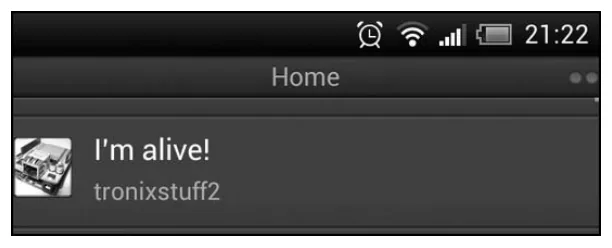

In this project, you’ll learn how to make your Arduino send tweets through Twitter. You can receive all sorts of information that can be generated by a sketch from any device that can access Twitter. If, for example, you want hourly temperature updates from home while you’re abroad or even notifications when the kids come home, this can offer an inexpensive solution.
Your Arduino will need its own Twitter account, so do the following:
- Visit http://twitter.com/ and create your Arduino’s Twitter account. Make note of the username and password.
- Get a “token” from the third-party handler website http://arduino-tweet .appspot.com/, which creates a bridge between your Arduino and the Twitter service. You’ll need to follow only step 1 on this site.
- Copy and paste the token (along with your Arduino’s new Twitter account details) into a text file on your computer.
- Download and install the Twitter Arduino library from http://playground .arduino.cc/Code/TwitterLibrary/.
The Hardware
Here’s what you’ll need to create this project:
- One USB cable
- One network cable
- One Arduino Uno and Ethernet shield, or one Freetronics EtherTen
The Sketch
Enter the following sketch, but don’t upload it yet:
// Project 61 - Creating an Arduino Tweeter
#include <SPI.h>
#include <Ethernet.h>
#include <Twitter.h>
❶ byte ip[] = { xxx , xxx , xxx , xxx };
❷ byte mac[] = { 0xDE, 0xAD, 0xBE, 0xEF, 0xFE, 0xED };
❸ Twitter twitter(" token ");
❹ char msg[] = "I'm alive!"; // message to tweet
void setup()
{
delay(30000);
Ethernet.begin(mac, ip);
Serial.begin(9600);
}
void loop()
{
Serial.println("connecting ...");
if (twitter.post(msg)) {
int status = twitter.wait();
❺ if (status == 200) {
Serial.println("OK.");
} else {
Serial.print("failed : code ");
Serial.println(status);
}
} else {
Serial.println("connection failed.");
}
do {} while (1);
}As with Project 60, insert the IP address at ❶ and modify the MAC address if necessary at ❷. Then insert the Twitter token between the double quotes at ❸. Finally, insert the text that you want to tweet at ❹. Now upload the sketch and connect your hardware to the network. (Don’t forget to follow your Arduino’s Twitter account with your own account!) After a minute or so, visit your Twitter page and the message should be displayed, as shown in Figure 19-4.

When you’re creating your Arduino tweeter, keep in mind that you can send no more than one tweet per minute and that each message must be unique. (These are Twitter’s rules.) When sending tweets, Twitter also replies with a status code. The sketch will receive and display this in the Serial Monitor using the code at ❺, an example of which is shown in Figure 19-5. If you receive a “403” message like this, either your token is incorrect or you’re sending tweets too quickly. (For a complete list of Twitter error codes, see http://dev.twitter.com/docs/error-codes-responses/.)